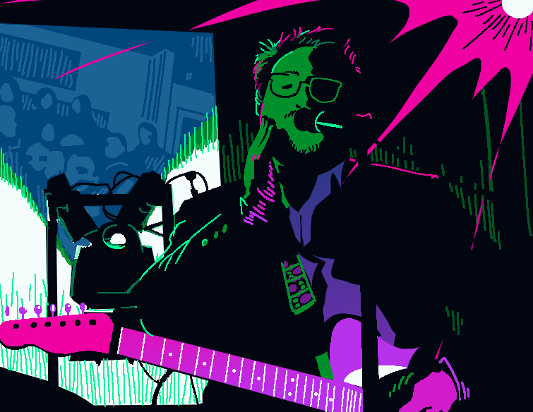
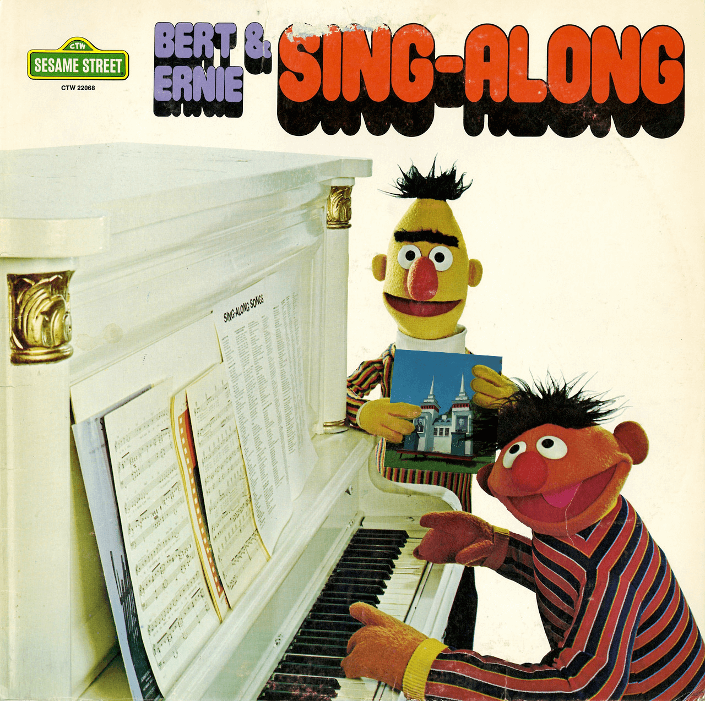
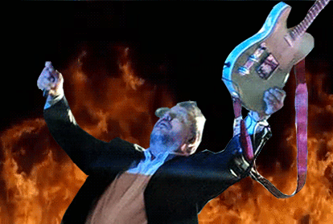

Not including lots more mad-sciencey TMBG-inspired art drawn under the banner of
If you like my work, consider checking out my other art, comics, and zines or following me on social media.

 


Back to Fun Stuff


")
")